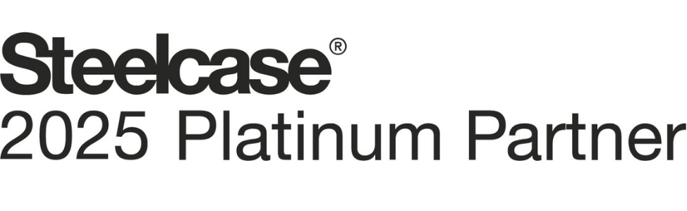

Ofis
Ergonomik, esnek ve sürdürülebilir çalışma alanları. Steelcase, Orangebox, Coalesse ve daha fazlası.

Zemin
Karo halı, LVT, kauçuk, yükseltilmiş döşeme ve dış mekân sistemleri. Interface, nora, Tate, Lindner.
1989'dan
bu yana
Dünyanın önde gelen tasarım markalarını Türkiye'deki mekânlarla buluşturuyoruz. Tasarım, proje, satış, uygulama ve servis aşamalarında yetkili temsilci olarak yanınızdayız.
Tek çözüm
ortağı

Çalışan sağlığını ve konforu gözeten ergonomik tasarımlar; esnek çalışma modellerine uyum sağlayan, şirket kültürünü yansıtan mekânlar.
- Çalışma Sandalyeleri10
- Çalışma Masaları7
- Toplantı Masaları13
- Toplantı Sandalyeleri7
- Oturma Grupları9
- Tekli Oturma5
- Bank ve Puflar5
- Bar Sandalyeleri5
- Konferans Sandalyeleri6
- Akustik ve Gizlilik5
- Depolama Üniteleri4
- Arşiv ve Depo Sistemleri

Ses yutan karo halılardan suya dayanıklı LVT'ye, veri merkezine uygun yükseltilmiş döşemeden teras ayak sistemlerine; iç ve dış mekânın tüm zemin katmanları.
Markalar · Interface · nora · Tate · Lindner · ZTFloor · Buzon · VetedyMekânın her
katmanı
Her grupta renk seçenekleri, teknik dokümanlar ve kullanıldığı projeler.
Tüm ürünler


Ziraat Bankası İstanbul Finans Merkezi
A Tasarım ve Kohn Pedersen Fox imzalı binada altyapıyı taşıyan Lindner yükseltilmiş döşeme ve üzerinde Interface karo halılar.
- Mimar
- A Tasarım Mimarlık
- Ürünler
- Lindner Nortec G30Interface Urban Retreat 201 · Human Nature
Kim, nerede,
hangi ürünle
30 proje; mimarı, yılı ve kullanılan ürünleriyle.
Tüm projeler
Brown Forman
AstraZeneca

Confidential Insurance Company

Vertigo Games

Amadeus

Avrupa Office Ataşehir

BASF

Repkon Ofis

SixLeads

Vodanet Systems Ofis
Ziraat Bankası İstanbul Finans Merkezi

BUPA Acıbadem Genel Müdürlük

Enerjisa Ankara Ofis

Loop Games Hacettepe Teknokent

Oracle Ankara

Acıbadem Genel Müdürlük

Mercedes-Benz Genel Müdürlük

NOKIA

Vakıfbank İstanbul Finans Merkezi

HPE

PepsiCo Türkiye Ofisi

Pfizer İstanbul

Reckitt Ofis

Anadolu Holding Genel Müdürlük

Acıbadem Üniversitesi

Akçansa Genel Müdürlüğü

BKM Genel Müdürlüğü

JLL Türkiye Ofisi

Yatsan Showroom

İmak Ofset
Bu sektörde proje yok.
Türkiye
temsilcisi
Her marka için ürünler, teknik belgeler ve o markayla yapılan projeler.
Tüm markalar130 ürün · 26 projeSteelcaseOfis mobilyası
34 ürün · 12 projenoraKauçuk zemin
Zemin ve DöşemeOrangeboxOfis mobilyası
11 ürün · 1 projeCoalesseSosyal alan mobilyası
10 ürün · 2 projeTateYükseltilmiş döşeme
Zemin ve DöşemeLindnerYükseltilmiş döşeme
2 projeZTFloorYükseltilmiş döşeme
2 projeBuzonDış mekan ayak sistemleri
Zemin ve DöşemeVetedyDoğal ahşap deck
Zemin ve DöşemeViccarbeOfis mobilyası
5 ürün · 1 projeBoliaMobilya
9 ürün · 2 projeVanerumOfis mobilyası
1 ürün · 0 projeBruynzeelArşiv sistemleri
Ofis Mobilyaları

Zeminde karbon negatif, oturmada karbon nötr
Interface ürünlerini yaşam döngüleri boyunca karbon nötr sunan ilk küresel zemin üreticisi; Steelcase Series 1 CarbonNeutral® sertifikalı.


Teklif
alın
Ürün grubunu, miktarı ve proje konumunu paylaşın; ilgili ekibimiz dönüş yapsın.
Teklif talebi
Yaklaşık bir miktar yeterli; detayları birlikte netleştiririz.
Teşekkür ederiz; ekibimiz en kısa sürede dönüş yapacak. (Tasarım önizlemesi: gönderim yapılmadı.)